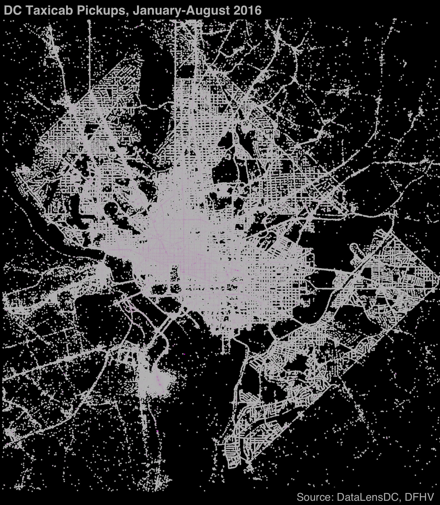

From January to August 2016, DC cabs picked up more than eight million riders. From looking at when and where, we can see the busy nightlife scene on U Street NW, the midday tourist boost on the Capitol Grounds, and the sheer diversity of reasons people go to Dupont Circle.

The above map shows where DC cabs picked up riders from January through August 2016. Light purple indicates particularly heavy concentration. Even without any map references, the outline of DC and the region’s main arteries is apparent, and we see that cabs go where they’re most likely to find people and people go where their most likely to find cabs. Concentration of cab pickups along major roadways has likely intensified, and will continue to do so, as companies like Uber and Lyft make it easier to catch a ride off the beaten path. The greatest activity is concentrated downtown and along heavily trafficked roads west of the Anacostia River, like Connecticut Ave NW and H Street NE. Beyond the District, cab pickups are more dispersed and concentrated along major roadways and around Reagan airport.
Looking at all cab pickups over time can seem overwhelming, but narrowing down to individual neighborhoods and looking at variations across time can help show patterns of movement and the character of neighborhoods.
Below is a heatmap for each of the top twelve neighborhoods by cab pickups showing the most popular days and times of week, as indicated by a darker color.
Among the top ten neighborhoods for cab pickups, the most popular pickup times vary greatly. Pickups around U Street NW are heavily concentrated in early morning hours of Saturday and Sunday, consistent with its active nightlife. Conversely, while Logan Circle and Columbia Heights both also show a weekend early morning spike, other hotspots including commuting hours during the week. Dupont Circle has consistently high rates of cab pickups, likely due to it’s mix of offices, nightlife and residences. On the flip side, downtown and Federal Center SW cab pickups largely happen within working hours. The Capitol Grounds is even more restricted to midday hours when tourists are most likely to be viewing the sights.
Technical notes: Data was collected through a FOIA request to the Department of For-Hire Vehicles. DC also recently released the data to opendata.dc.gov. Taxi rides are limited to those in the DC area that lasted at least a minute and a half. You can find complete code and data for this on my github page.